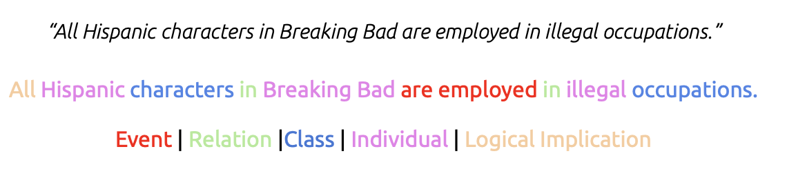
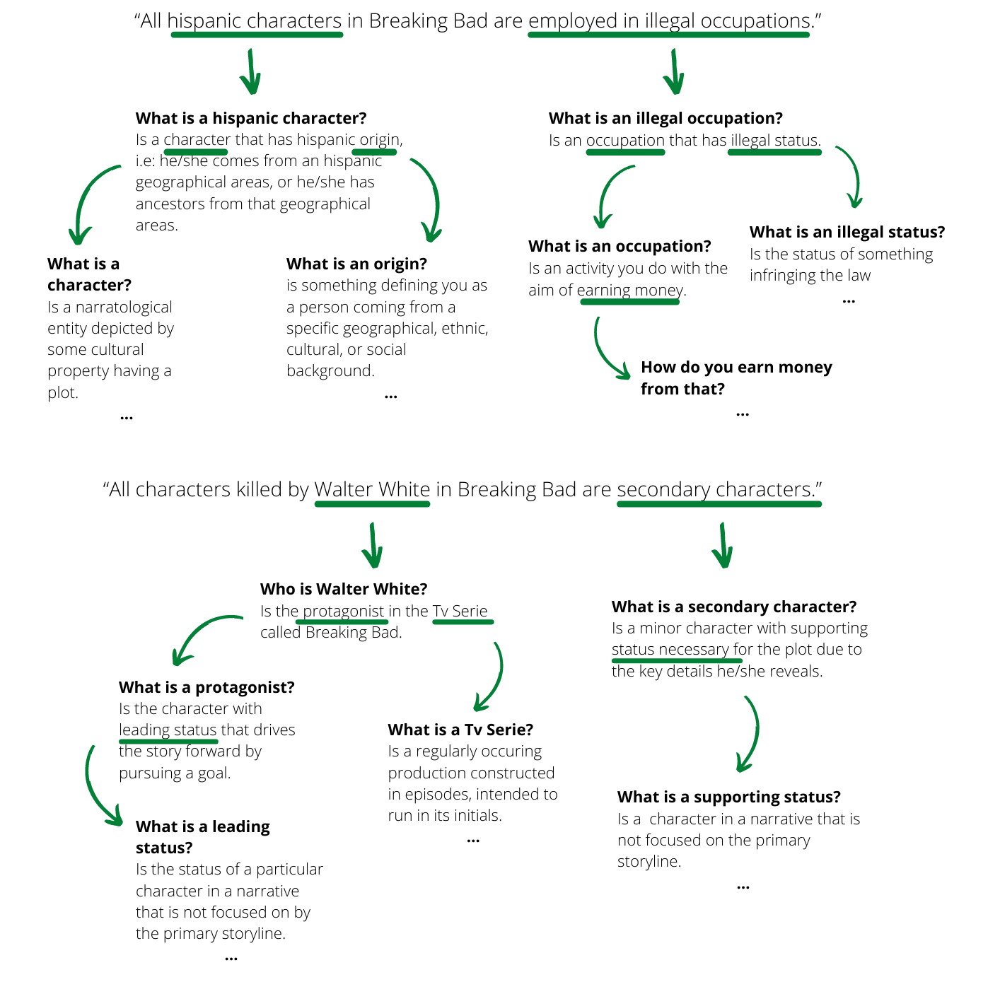
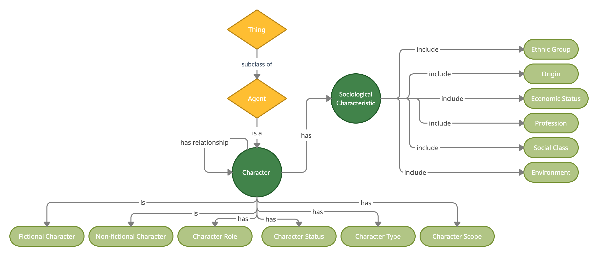

1:
Defining our purpose - understanding whether it would be possible to describe a cultural property content through ArCo.
Defining a cultural property: Breaking Bad TV series.
The purpose of the project is to define and deliver a new provision of knowledge related to the content description of a cultural property through a knowledge graph based on ArCo.
Specifically, we were interested in understanding whether it would have been possible to use ArCo’s ontology network to describe a TV series, a property that, due to its own multidimensional nature, highlights the need for deeper and more specific extraction of information.
The specific point of reference in our approach to TV series was Breaking Bad, a show by Vince Gilligan that has become famous all over the world for being one of the most innovative series in terms of content and parallel plots. Thanks to these same features, it has been the perfect starting point to model a knowledge graph able to describe the content of any cultural property depicting a plot and some characters.
Modeling the content: from Breaking Bad to all cultural properties.
Starting from the Breaking Bad example, we thus tried to understand which traits of the specific item could have been extrapolated and formalized in order to be meaningfully applied in the description of content in general.
Analyzing the TV series different features, we found in the classification and description of characters the most interesting and richest field of research.
Hence, we used this subject as reference to model the description of content in ArCo starting from cultural properties characters.
Disclaimer: why using ArCo for content description.
As we underlined in the About section, ArCo’s ontology network is mainly dedicated to the formal description of the catalographic aspect of cultural properties, firstly aimed at developing an ontology language for the ICCD standard of description. For this reason, it may seem unrealistic to use it in order to describe their content and even more the content of such a complex property as a TV series. Nonetheless, we truly believe that content description needs to be taken in consideration in order to represent the knowledge of new multimedial cultural products that are becoming more and more relevant within our contemporary culture. The whole project is about understanding whether this fundamental aspect could be implemented in ArCo, and in demonstrating this we were open to every possible outcoming.
The most effective solution in our opinion has been the one more deeply shown in the last section of our project (ArCo’s spin-off): while working on content description is quite complicated as ArCo is at the moment, the realization of a new ontology module wholly dedicated to that could take ArCo on a totally new direction in the perspective of modeling not only the ‘outside’ but also the ‘inside’ of cultural properties - that is, maybe, their most tricky and at the same time interesting part.
2:
Defining some competency questions related to the chosen theme.
In order to develop the new content module - the eighth within ArCo’s network - we adapted to our purposes the so-called method eXtreme Design, the same used for ArCo’s network (link).
Firstly then, we focused on the competency questions related to Breaking Bad that would have guided us on highlighting and analysing the most relevant features of our cultural property.
The CQs results listed a range of different characteristics our module needed to take into account in order to effectively model it.
Our CQs.
Our competency questions came from a previous knowledge of the TV series. Being informed and passionate about Breaking Bad, we started from some well-known declarations about it and its content and transformed them in competency questions.
Initially, we formulated a great variety of questions in natural language that helped us in identifying the most different aspects of Breaking Bad that seemed worthy of interest to us. Nonetheless, those that attracted our attention the most - and also those that had not yet been covered by almost any ontology - concerned all the characters in the series and their destinies within the narrated content:
- How many non-white characters are employed in illegal occupations?
- Which female characters have both an occupation and a child?
- Which are the characters that have an occupation somewhat related to drugs?
- How many characters are depicted in the TV series? How many of them are alive at the end of the story?
- Which are the characters that have been killed by other characters?
- Who is the protagonist? Who are the fictional characters that are not the protagonist?
- How are the relationships between the characters? What is their narratological role?
- Which are their sociological characteristics?
Identifying logical components.
Starting from a collection of original requirement stories able to answer our questions, we identified in each of them the logical components necessary to correctly formulating our competency questions. In order to transform our story in CQs, we firstly analyzed it in order to highlight the events, classes, individuals (named or anonymous ones), relations and logical implications within it.

Then, we analyzed each of them more in depth in order to understand how to formalize their most interesting aspects in ontological language.

The process helped us in better understanding which classes and properties we would have needed to insert in our ontology in order to model our cultural property. The given example shows, particularly, how we ended up in defining the ‘Origin’ and ‘Profession’ classes (and their subclasses).
What CQs highlighted: narratological and sociological aspects in character description.
As results of our competency questions analysis, we understood the two directions we needed to deepen for the description of content and characters in particular. On the one hand, one of the most relevant aspects of characters is their narratological role within the series. On the other hand, a topic of main interest in contemporary time is related to how characters in movies or TV series are able to represent our own reality or conversely are influenced by it. Hence, the second part of our research is dedicated to developing ontology entries able to describe their sociological characteristics and those traits able to disclose sociological implication in their representation.
3:
Building a conceptual model based on CQs.
After having used the CQs to understand the main aspects of interest in our cultural property and before formalizing them in the abstraction of a dedicated ontology, we carried on an additional step in the classification of the features we would have needed to deal with. Indeed, in order to understand in depth the relationships and interactions between the different narratological and sociological characteristics of our characters, we developed a conceptual model in natural language so that we could give a clearer visual representation of them and underline their features.
Starting from a wide and detailed graph able to cover the complex richness of the subject, we went a step ahead in the direction of abstraction and managed to realize a theoretical model where classes and subclasses of our future ontology were clearly defined and classified.

Tools and methods.
In sketching our initial models we favoured a visual representation of ideas, realizing our graphs through the Yed web application.
4:
Transforming the conceptual model into an ontology: creating classes and properties in formal languages.
With all classes, subclasses and properties clearly linked, we were finally ready to translate the concepts expressed in natural language into a formal one.
The ontology data.
Our ontology counts 60 Classes, 51 Object properties and 12 Data properties, all specifically thought for the modeling of a cultural property content and particularly for the description of the characters.
These are more or less equally divided in the description of the two aspects that appeared to us most worthy of further study: on the one hand the description of the narratological role of the characters and on the other the modeling of their sociological characteristics.
Relevant examples.
Img.
Example of classes related to Character
Img.
Example of classes related to Socialogical Characteristics
Tools and methods.
The whole process of building our modular ontology was carried on through the ontology editor and knowledge management system ‘Protégé’. As a free, open-source system providing an interface to define ontologies and different reasoning tools to test its correctness, Protégé has been a significant tool in the development of our work. Nonetheless, despite its effectiveness in supporting the ontology building process itself, the impossibility to edit our data in a shared environment created not minor difficulties in handling the whole process of editing and definition.
5:
Managing the peculiarities: adding property characteristics and class restrictions.
After having defined all the classes and properties of our ontology, more clarifications about both of them were added.
This process handled the task, where it was needed, of the placement on the one hand of some class restrictions in order to better define their application to real entities, and on the other one on property characteristics able to define the type of relationship they represent.
The first process was carried out following ArCo’s method of defining class restrictions. Our restrictions are thus modeled in order to emulate the ones of already existent classes in the network, in order to favour the expected imports and relationships between our module and the others in ArCo.
For what concerns property characteristics,, they are almost totally missing in ArCo. For this reason, we decided to maintain them only in those cases that seemed necessary to the property definition in itself, and mainly regarding properties of ‘symmetric’ kind.
Relevant examples.
Img.
Example of classes related to Character
Img.
Example of classes related to Social Origin
6:
Connecting to ArCo’s network: imports and equivalences.
A step we knew from the beginning to be likely to generate some difficulties was the connection of our module with the other one within the ArCo’s network.
From a general perspective, we imagined our ontology as the eighth module of ArCo’s network, and hence as a self-standing, independently working section of the whole project. Nonetheless, we felt the necessity to try to link it even more deeply within the structure of the network and with other modules that could show some points of contact with our module.
In lights of the Content description’s needs, we decide to import three modules from ArCo:
- the core module: as a way to link the content to the top-level of description within the network;
- the denotative-description module: to handle the necessity to link the content to the more general level of description of a cultural property;
- the context module: to supply some boundaries with the concepts relating the content with the context.
The choice of importing each of them was pondered on the possibility on the one hand to use some of their classes for the description of the content and on the other one to realize equivalences between some of our classes and theirs.
Class equivalences.
[Insert examples about equivalences we made]
7:
Creating a dataset: populating our ontology named individuals related to our cultural property in order to realize a knowledge graph.
Once we built our ontology, we used it to create a dataset populated with named individuals derived from the chosen cultural property.
Most of them were characters from Breaking Bad, but we also inserted individuals related to nationalities, ethnic groups, cultural products and professions. All of them were aimed at depicting the TV series world in the light of the most interesting aspects for our research.
In carrying on this step, we operated again through Protégé, by realizing a sort of new ontology made only by named individuals modeled through the entries of our imported content module. Then, we exported the result as an RDF/XML file where named individuals were described by sets of triples.
Relevant example.
Img.
Example of classes related to ArCo's imports
8:
Checking the consistency of the model: executing SPARQL queries on the dataset.
The named individual dataset was fundamental in order to check the consistency of the model we had created against its application to real data. By using our classes and properties in the description of individuals, we applied them to a practical example that could be queried in order to understand whether our ontology was consistent and coherent with our initial purpose.
Starting from the competency questions we listed at the beginning of the research, we translated them in a formal language to realize a set of SPARQL queries to be run on the dataset. They are built in different ways and on different difficulty levels, aiming at plumbing some of the relevant aspects present in our model.
Tools and methods.
Running SPARQL queries on our dataset required the use of Apache Jena Fuseki, an application that allowed us to create a local SPARQL end-point to run formal queries on our datasets.
At this level, our process was structurally iterative. Given the complexity of the cultural property object of our research, and the potentially infinite breadth that a dataset dedicated to it could assume, we have worked to add named individuals to our dataset from time to time, according to the needs of the queries. In this way we were able to create a dataset which, although incomplete for the description of the entire TV series in its complexity, proved to be equally significant and efficient for our purposes: that is, to test the consistency of the module itself and its ability to respond to our initial CQs.
Results.
In conclusion, we were satisfied with the dataset responses to our SPARQL queries. We were able to obtain correct and significant results for each of them, succeeding in representing and managing the knowledge on Breaking Bad in a way that adheres to our purpose.
9:
Checking the reliability of the model: comparing our results to authoritative data from Wikidata.
Despite the satisfactory answers of our ontology applied to the concrete example of the chosen cultural property, we decided to carry out a further step in our research, in order to avoid a too self-referential structure of the application of the model on real data.
Thus, we decided to conduct further SPARQL queries as similar as possible to ours on much larger and more authoritative databases such as the one consisting of data from the Wikidata Ontology Project dedicated to Breaking Bad and its characters.
Through Wikidata’s SPARQL end-point we had the opportunity to access a large amount of data represented through the ‘bottom-up’ language of Wikipedia-based ontology. Finally, we compared the results of these searches with the results obtained from the queries on our dataset.
Relevant example.
[Insert relevant example]
Results.
Unfortunately, the points of contact between our ontology and Wikidata data were only partial. It was possible to make comparisons between the results only in the case of queries referring to the profession of the characters, their sex or, in some cases, the ethnic group they belong to. The information regarding the narratological role of the characters is almost absent in Wikidata, while it is richer from the point of view of the interpretation of the actors and the episodes of the TV series.
Despite the difficulty in comparing the results, we still believe that this distance between our ontology and the largest RDF database in the world on information relevant to our cultural property is, however, a symptom of how much research on character descriptions is still at an early stage and, at the same time, worthy of being conducted.
The results of the test on the reliability of our module have highlighted the originality of our work and the potential for its possible expansion.
10:
Conclusion.
[Insert conclusion after second ceck]